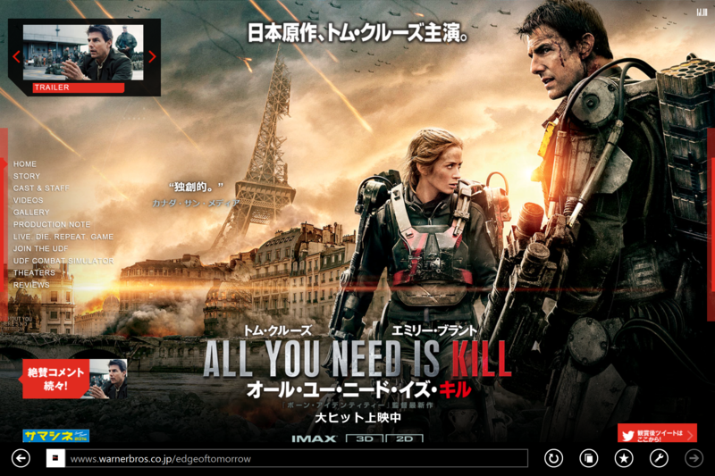

『オール・ユー・ニード・イズ・キル』
公開日：

姪っ子の1歳の誕生日で、東京に来ている。そのついでに昔の友達と会って、映画を観ることにした。
『超高速！ 参勤交代』も観たかったのだけど、じゃんけんで敗れて『オール・ユー・ニード・イズ・キル』を観ることになった。「原作、日本。主演、トム・クルーズ」というキャッチフレーズ通り、日本語のラノベが原作らしいのだけど、自分は読んだことない（存在も知らなかった）。
内容は……割と面白かった。
舞台は謎の地球外生命体に侵略され、欧州が失陥した世界。トム・クルーズが演じる“ケイジ少佐”は広報担当の根っからのヘタレで、将軍直々に下された最前線への取材任務を断り、新兵に格下げされてしまう。
“ケイジ二等兵”が目を覚ましたのは、地球外生命体に対する最前線基地となっていたイギリス・ヒースロー空港。そのまま最前線・フランス（多分ノルマンディーかな？）へ送られ、第二次世界大戦の“Dデイ”を彷彿とさせる割と無茶な上陸作戦で、我らがケイジ二等兵は哀れ、戦場の露と消える。
しかし……たまたま最後に倒した地球外生命体がユニーク個体であったらしく、その血を浴びたケイジは死んでもそれが“リセット”されてしまう不思議な能力を手に入れたのだった！ そして、ループを繰り返すうちに、かつて同じ能力を持っていたという美しき女戦士“リタ”と出会う（あぁ、ハリウッドなラブストーリーの波動を感じる！）。
――と、まぁ、そんな感じのいわゆる“ループもの”で、高難易度のシューティングゲームみたいに、とりあえず死にまくりながら敵の出現パターンを覚えて、ステージをクリアしていくという設定が面白い（ご都合主義なことに、“リセット”されても記憶は残るらしい）。
ループするのが当たり前になってから、ループ能力を失った時の一発勝負感はもっと盛り上げてほしかったかなーと思う。「輸血されちまった、能力消えちまったぜシット！」ぐらいな感じで流されちゃってたし。あと、地球外生命体のデザインがちょっとありきたり。どこかで見たやつって感じだ。
でも、ストーリーもアクションも面白かったし、劇場で見る価値は十分にあると思う。